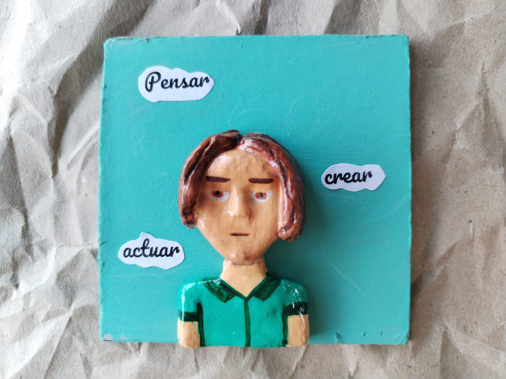
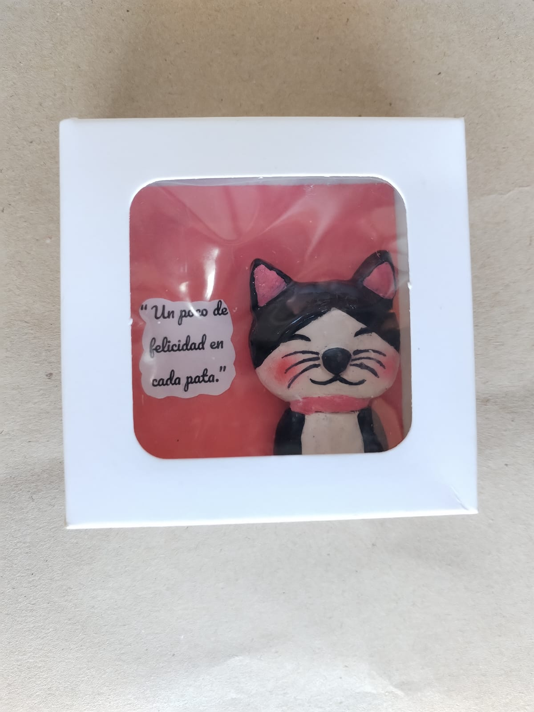
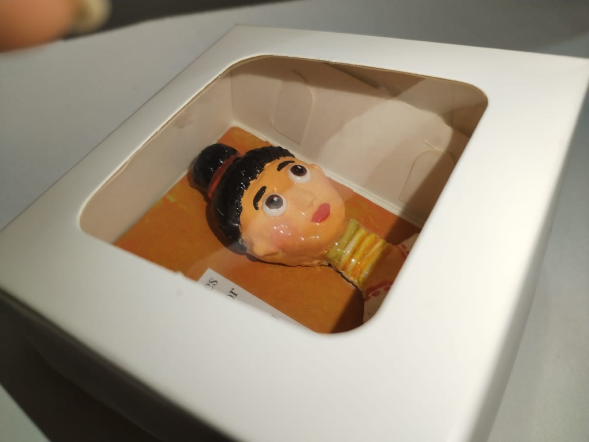
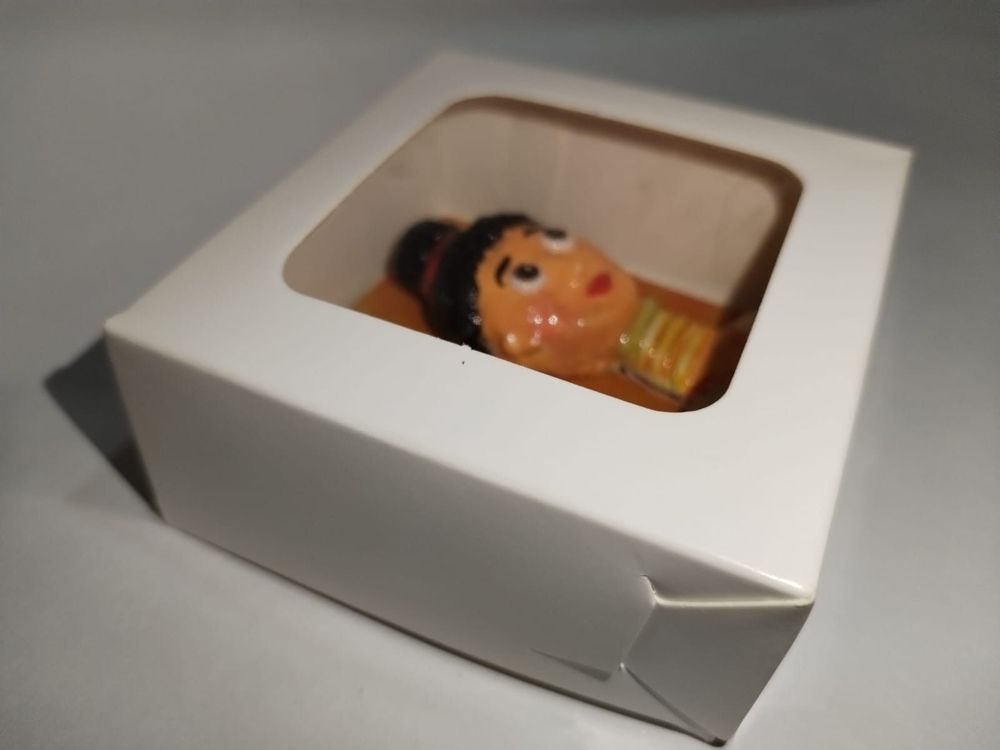
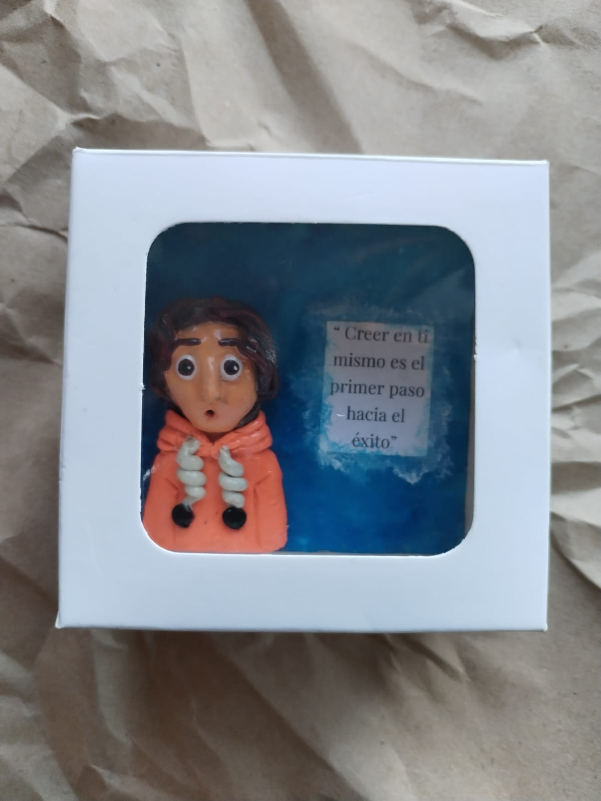
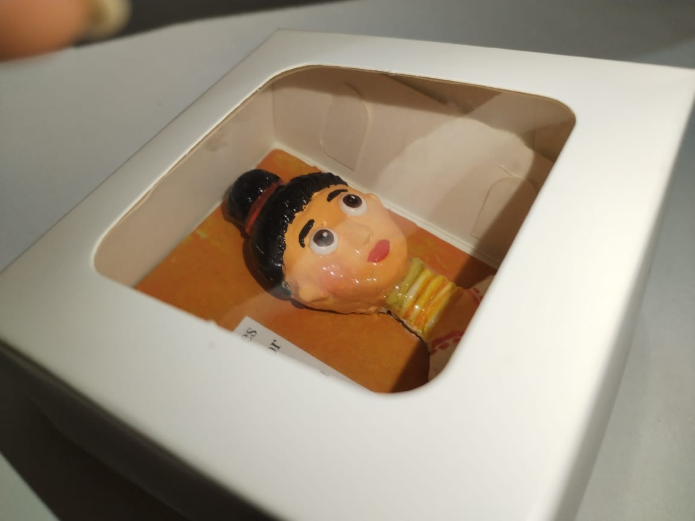
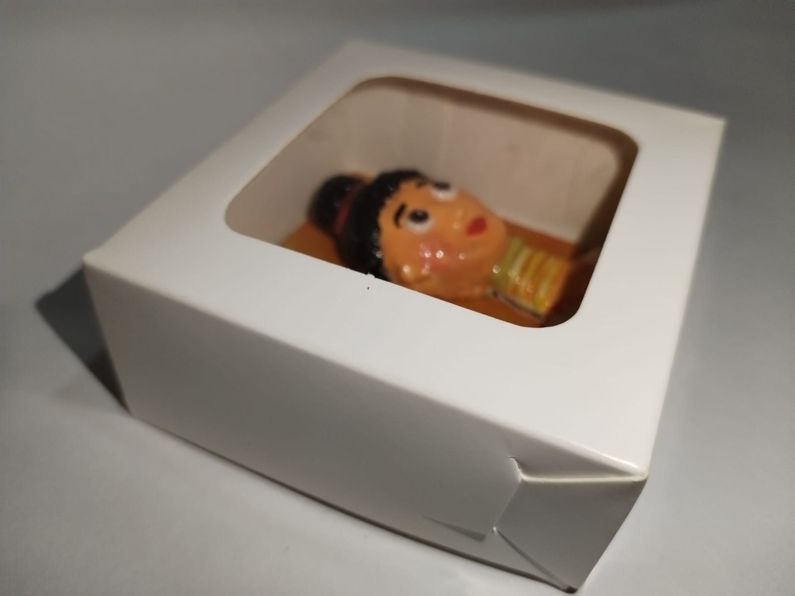
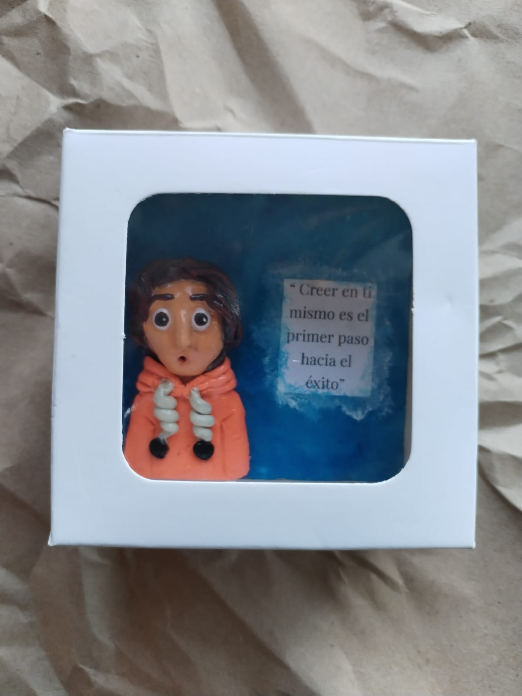

Bienvenido a Inspiración en Miniatura
Descubre la belleza de los mini cuadritos hechos a mano en arcilla. Cada pieza es única y creada con mucho amor y dedicación, perfecta para decorar tu espacio o regalar a alguien especial.
Nuestros Productos

Mini Cuadro Flor
Pequeña obra de arte con diseño floral en tonos cálidos.

Mini Cuadro Geométrico
Diseño moderno y minimalista para los amantes del arte abstracto.

Mini Cuadro Naturaleza
Inspirado en elementos naturales y texturas orgánicas.
Galería de Fotos
 





Comentarios de Clientes
"Me encantaron los mini cuadritos, son hermosos y muy bien hechos."
- Ana P."Un detalle perfecto para regalar. Muy recomendados."
- Carlos M."Atención personalizada y piezas únicas. Excelente trabajo."
- Laura R.Precio
$12.000 por mini cuadrito
Contacto
¿Interesado en adquirir alguno de nuestros mini cuadritos o hacer un pedido personalizado? Escríbenos:
Email: contacto@inspiracionminiatura.com
Instagram: @inspiracionminiatura